5.3.1. ПРЕПРОЦЕССОР
5.3.1.3.
Режимы работы ПРЕПРОЦЕССОРА
Универсальные органы
управления ПРЕПРОЦЕССОРА
При старте ПРЕПРОЦЕССОРА на экране появляется “Окно ПРЕПРОЦЕССОРА” (рис. 1). Если ранее был выбран файл CN (например, в составе файлов расчетного случая), то в поле отрисовки этого окна (рис.1, поз. 4) появится двумерное изображение этой конструкции.
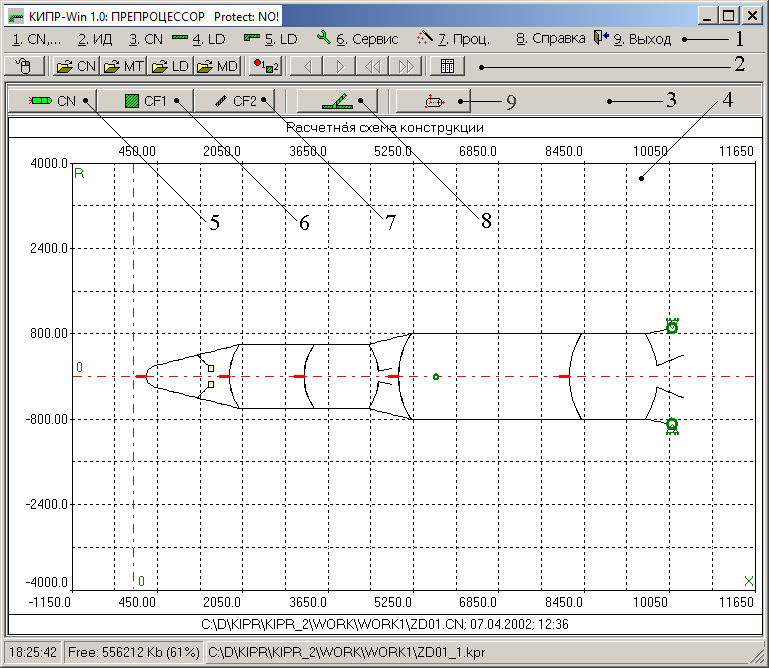
Рис. 1
Группы органов управления (рис. 1): “Меню ПРЕПРОЦЕССОРА” (поз. 1); группа “Универсальные органы управления” (поз. 2); группа “Объекты отрисовки” (поз. 3).
Меню ПРЕПРОЦЕССОРА изображено на рис. 2.
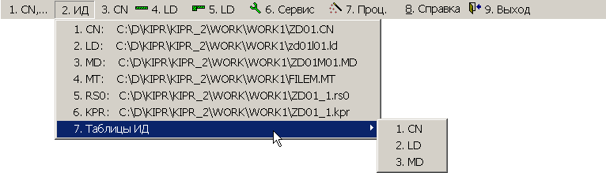
Рис. 2
Выбор позиции 1
(1. CN,…) Меню ПРЕПРОЦЕССОРА приводит к вызову Окна выбора исходных файлов.
Выбор позиции 2 (2. ИД) Меню ПРЕПРОЦЕССОРА приводит к появлению выпадающего меню со списком файлов, предназначенных для редактирования или просмотра (рис. 2).
Выбор позиции 3 (3. CN) Меню ПРЕПРОЦЕССОРА приводит к появлению группы органов управления “Объекты отрисовки” (рис. 1, поз. 3), предназначенных для управления отрисовкой конструкции и ее элементов (именно эта группа изображена на рис. 1).
Отрисовка расчетной схемы конструкции
Кнопка в поз. 5 предназначена для отрисовки расчетной схемы конструкции (пример расчетной схемы конструкции показана на рис. 1).
Отрисовка CF1 (шпангоуты)
Кнопка в поз. 6 предназначена для отрисовки CF1 (шпангоуты).
Отрисовка CF2 (оболочек)
Кнопка в поз. 7 предназначена для отрисовки CF2 (оболочки).
Шпангоуты
сопряжения оболочечных элементов
Кнопка в поз. 8 предназначена для автоматизации вычисления координат локальных узлов шпангоутов сопряжения оболочечных элементов.
Необходимым условием для автоматического вычисления этих координат является наличие информации о сопрягаемых оболочках в файле CN (ведь конструкцию можно “наращивать” поэтапно, поэтому на данном конкретном этапе формирования расчетной схемы сопрягаемые оболочки, в принципе, могут отсутствовать).
Координатами глобального узла, в котором будет размещен шпангоут сопряжения, на первоначальном этапе могут быть любые положительные числа.
Нажатие на эту кнопку приводит к появлению на экране дисплея следующего запроса на ввод номера глобального узла, в котором необходимо разместить шпангоут сопряжения:
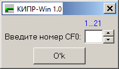
Над полем ввода указаны границы допускаемых для рассматриваемой расчетной схемы номеров глобальных узлов (CF0).
После ввода номера глобального узла на экране дисплея (если нет ошибок в исходных данных) появляется окно редактора с результирующей информацией вида:
|
Глобальный узел = 14 |
|
Число оболочек = 3 |
|
|
|
Номера оболочек: |
|
14 15 19 |
|
Строка массива XR1[1:NR1][0:4] |
|
14 0.0 0.0 5 0 |
|
Подмассив XZ_K[1:5][0:1] |
|
8.406000e-03 7.980000e-02 |
|
8.406000e-03 8.020000e-02 |
|
8.400500e-03 8.020000e-02 |
|
8.400500e-03 7.980000e-02 |
|
8.403950e-03 7.959373e-02 |
При появлении сообщений об ошибках внести соответствующие коррективы. Ошибки могут быть следствием как некорректно заданного номера глобального узла (например, задан узел, с которым связана только одна оболочка или же задан узел, в котором точно состыкованы две оболочки) или же следствием некорректного описания сопрягаемых оболочек.
Результирующую информацию необходимо перенести в файл исходных данных (CN).
Рекомендуемая последовательность действий при этом следующая:
- выделить блок информации и скопировать ее в буфер обмена;
- нажать клавишу <Esc> для выхода из редактора, в результате чего на экране дисплея появится расчетная схема конструкции;
- с помощью команд ОТРИСОВЩИКА получить крупным планом изображение фрагмента конструкции, в котором предполагается разместить шпангоут сопряжения;
- загрузить на редактирование файл CN;
- скопировать информацию из буфера обмена;
- с помощью команд редактора перенести эту информацию в отведенные для нее поля;
- увеличить на единицу параметр NS1 (число шпангоутов);
- задать номер материала для добавленного шпангоута сопряжения (в автоматически сформированной строке массива XR1 недопустимый номер материала - нуль);
- поправить координаты глобального узла, в котором расположен шпангоут сопряжения (рекомендуемые значения новых координат - нулевые);
- сохранить изменения в файле;
- нажать клавишу <Esc> для выхода из редактора.
В результате на экране дисплея (если программа диагностики не обнаружила ошибок) появится новое изображение фрагмента конструкции, в котором будет присутствовать добавленный шпангоут сопряжения. Убедившись, что добавление шпангоута завершилось корректно, продолжить работу.
Действия пользователя при обнаружении программой диагностики исходных данных ошибок стандартные.
Пространственное изображение конструкции
Кнопка
 (поз. 9 на рис. 1)
предназначена для вызова режима работы ОТРИСОВЩИКА, в котором осуществляется
пространственное изображение конструкции.
(поз. 9 на рис. 1)
предназначена для вызова режима работы ОТРИСОВЩИКА, в котором осуществляется
пространственное изображение конструкции.
Выбор позиции 4 ( 4. LD) Меню ПРЕПРОЦЕССОРА приводит к появлению группы органов управления “Объекты отрисовки” (рис. 1, поз. 3), предназначенных для управления отрисовкой типов нагрузок, а также нагрузок, действующих на элементы коснтрукции (рис. 3).
Типы нагружений
Кнопка в поз. 1 предназначена для отрисовки типов нагружений.
Погонные
и сосредоточенные нагрузки (CF0 и CF1)
Кнопка в поз. 2 предназначена для отрисовки погонных и сосредоточенных нагрузок, действующих на CF0 (глобальные узлы) и CF1 (шпангоуты).
Поверхностные
нагрузки на CF1 (шпангоуты)
Кнопка в поз. 3 предназначена для отрисовки поверхностных нагрузок на CF1 (шпангоуты).
Температура CF1 (шпангоуты)
Кнопка в поз. 4 предназначена для отрисовки температурных нагрузок на CF1 (шпангоуты).
Поверхностные
нагрузки на CF2 (оболочки)
Кнопка в поз. 5 предназначена для отрисовки поверхностных нагрузок на CF2 (оболочки).
Температура
слоев CF2 (оболочки)
Кнопка в поз. 6 предназначена для отрисовки температурных нагрузок на CF2 (оболочки).
Выбор позиции 5 ( 5. LD) Меню ПРЕПРОЦЕССОРА приводит к появлению группы органов управления “Объекты отрисовки” (рис. 1, поз. 3), предназначенных для управления глобальной отрисовкой нагрузок, действующих на конструкцию (рис. 4).
Зависимость
нагрузок от времени
Кнопка в поз. 1 предназначена для отрисовки графика зависимости нагрузок от времени (в задачах динамики!!!).
Кнопка в поз. 2 предназначена для отрисовки объемных нагрузок, действующих на всю конструкцию.
Кнопка в поз. 3 предназначена для глобальной отрисовки погонных и сосредоточенных нагрузок, действующих на CF0 (глобальные узлы) и CF1 (шпангоуты).
Кнопка в поз. 4 предназначена для глобальной отрисовки поверхностных нагрузок на CF1 (шпангоуты) и на CF2 (оболочки).
Кнопка в поз. 5 предназначена для глобальной отрисовки погонных и сосредоточенных нагрузок, действующих на CF0 (глобальные узлы) и CF1 (шпангоуты), а также поверхностных нагрузок на CF1 (шпангоуты) и на CF2 (оболочки).
Кнопка в поз. 6 предназначена для глобальной отрисовки температурных нагрузок на CF1 (шпангоуты) и температурных нагрузок на CF2 (оболочки).
Выбор позиции 6 ( 6. Сервис) Меню ПРЕПРОЦЕССОРА приводит к появлению сервисного меню (рис. 6).
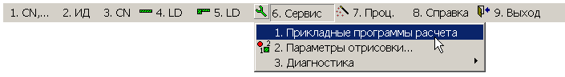
Рис. 6
1. Прикладные
программы расчета
Позиция “1. Прикладные программы расчета” этого меню предназначена:
- для проведения предварительной оценки некоторых методических параметров в задачах устойчивости и колебаний;
- для проведения вспомогательных расчетов при формировании расчетной схемы конструкции.
Выбор этой позиции приводит к появлению “Окна прикладных программ” (рис. 7).
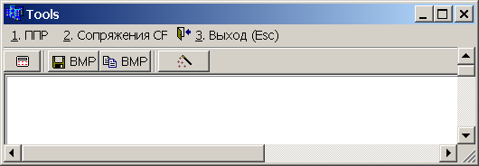
Рис. 7
Позиция “1. ППР” меню “Окна прикладных программ” предназначена для вызова прикладных программ задач устойчивости, колебаний, определения напряженного состояния оболочек вращения. Эти программы дают предварительную оценку некоторых методических параметров для простейших видов оболочек (рис. 8-10).
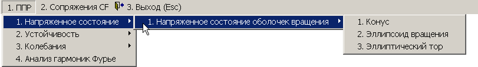
Рис. 8
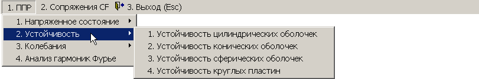
Рис. 9
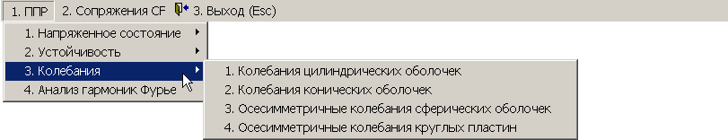
Рис. 10
Рассматриваются цилиндрическая, коническая, сферическая оболочки и круглая пластина толщиной h. Остальные геометрические размеры представлены на рис. 11-14.
|
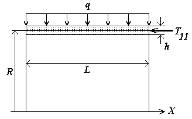 Рис. 11 |
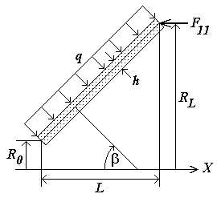 Рис. 12 |
|
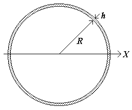 Рис. 13 |
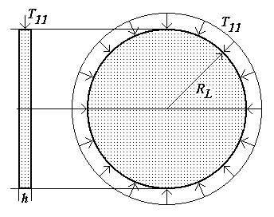 Рис. 14 |
Механические характеристики определяются модулем упругости E, коэффициентом Пуассона n и плотностью r.
При выборе той или иной позиции из “Меню прикладных программ“ (рис. 8-10) на экране дисплея появляются соответствующие расчетные схемы.
Для получения решения задачи необходимо нажать на кнопку (“СТАРТ”, рис. 7). В результате последовательно будут появляться окна с приглашением ввести те или иные исходные данные задачи.
Окна ввода могут иметь одну или более позиций. Если окно имеет одну позицию ввода (рис. 15), то в определенных в над полем ввода границах вводится число и нажимается клавиша <Enter>. На экране появляется следующее окно.
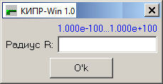
Рис. 15
Если окно имеет более, чем одну позицию ввода (рис. 16), то в указанных над соответствующим полем ввода вводится число и нажимается клавиша <↓> или <↑>. Числовое поле переходит на следующую или предыдущую позицию ввода.
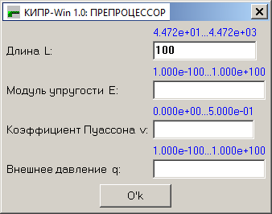
Рис. 16
После введения последнего числа на экране дисплея появляется текст с исходными данными, рисунками и результатами расчета.
Ниже приведен пример текста с результатами расчета частот собственных колебаний для цилиндрической оболочки.
|
Точное решение |
|||||
|
n |
Частота 1 |
Форма |
Частота 2 |
Форма |
d_omega |
|
n = 3 |
6.2365e+02 |
Поперечные |
2.0384e+03 |
Поперечные |
1.4148e+03 |
|
n = 4 |
4.5211e+02 |
Поперечные |
1.3273e+03 |
Поперечные |
8.7515e+02 |
|
n = 5 |
4.2365e+02 |
Поперечные |
9.9641e+02 |
Поперечные |
4.9928e+02 |
|
n = 6 |
6.5863e+02 |
Поперечные |
9.2047e+02 |
Поперечные |
2.6184e+02 |
|
n = 7 |
8.8203e+02 |
Поперечные |
1.0223e+03 |
Поперечные |
1.4029e+02 |
В этих результатах для каждой из пяти гармоник 3≤n≤7 вычислены две первые частоты собственных колебаний шарнирно опертой цилиндрической оболочки с заданными геометрическими и механическими характеристиками. В последнем столбце представлена “разница” между первой и второй частотой. Эта “разница” дает основание для выбора шага по частоте в случае использования программы CR040 для построения амплитудно-частотных характеристик или программы CR050 для определения частот и форм собственных колебаний. Этот шаг рекомендуется выбирать примерно равным Δω=(ω2-ω1)/10.
Для переноса результатов решения задачи в файл исходных данных необходимо выделить блок распечатки решения задачи и скопировать его в буфер обмена. Затем необходимо вызвать на редактирование соответствующий файл исходных данных и скопировать текст из буфера обмена в нужное место файла.
Позиция “2. Сопряжения CF” меню “Окна прикладных программ” (рис. 17) предназначена для вызова прикладных программ, содержащих элементы конструирования.
Рис. 17
Сопряжение
конуса и эллиптического тора
Сопряжение сферы и кругового тора
Пример
использования прикладных программ
Сопряжение конуса и эллиптического тора
Задача сопряжения конуса и эллиптического тора решается следующим образом.
Пусть X0, R0 - координаты начала или конца конуса; XC, RC - координаты центра тора; B, A - полудиаметры сечения тора (рис. 18).
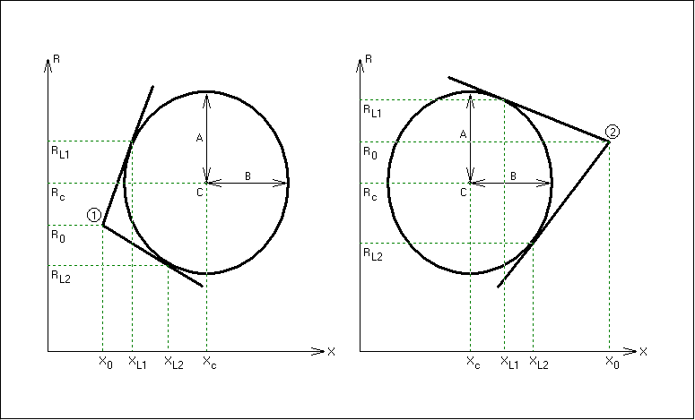
Рис. 18
Исходными данными для этой задачи являются:
- координаты конуса X0 и R0;
- координаты центра тора XС и RC;
- горизонтальный полудиаметр тора B;
- вертикальный полудиаметр тора A.
Результатом являются координаты сопряжения XL1, XL2, RL1, RL2.
Сопряжение сферы и кругового тора
Пусть XC, RC - координаты центра тора, r - радиус сечения тора, R - радиус сферы (рис. 19-20). Очевидно, если R<RC-r, то решение отсутствует; если R>RC+r, то существует четыре решения (рис. 19-20); если RC-r≤R<RC+r, то существует два решения (рис. 20).
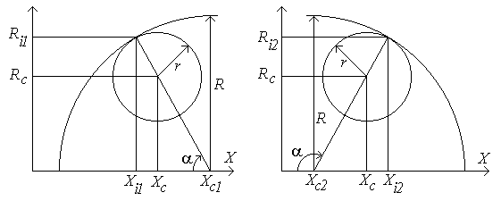
Рис. 19
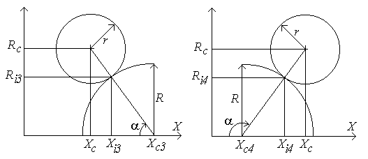
Рис. 20
Исходными данными для этой задачи являются:
- координаты центра тора XС и RC;
- радиус тора r;
- радиус сферы R.
Результатом являются координаты сопряжения Xij, Rij; координата центра сферы XCj, а также угол сопряжения α.
Пример использования прикладных программ
Рассмотрим эскиз конструкции, представленный на рис. 21. Конструкция состоит из шести оболочек. Глобальные узлы конструкции пометим номерами с прямым шрифтом, оболочки - курсивом.
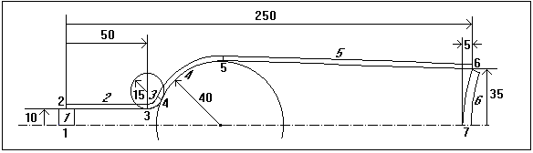
Рис. 21
Координаты узла 4 и центра сферы 4 вычислим с помощью прикладной программы "Сопряжение сферы и тора" (рис. 17).
Исходные данные имеют вид:
На экране дисплея последовательно высвечиваются четыре варианта ответа (рис. 22-25). Переходя от одного к другому с помощью клавиш “Стрелки” (или с помощью компьютерной мыши), необходимо выбрать нужный вариант ответа и нажать клавишу <Enter>.
Для нашей задачи подходит третий вариант (рис. 24). Результаты расчета имеют вид
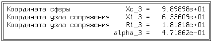
|
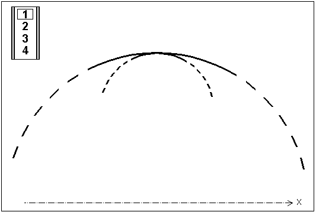 Рис. 22 |
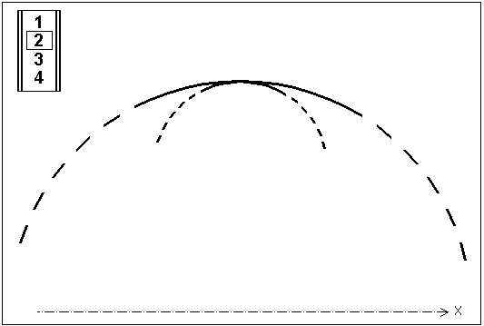 Рис. 23 |
|
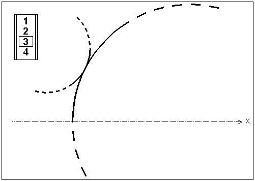 Рис. 24 |
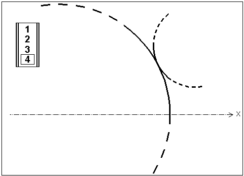 Рис. 25 |
Эти результаты подчеркнуты в файле bottle.cn (рис. 26).
|
***** bottle.cn
************************************************ ***** Параметры *** NR0, NS1, NS2, NS3, NS4, M, ME
************* 7 1 6
2 0 1
0 ***** Массив XR0[NR0][0:1] ********************************** * Xc0 Rc0 ************************************************************* 0 0 0
10 50 10 63.3609 18.1818
100.3193 39.9779 0 0 0 0 |
|
***** Массив
XR1[NS1][0:4]
********************************** *
IK XK0 RK0 N_K m_K ************************************************************* 1 250 30 4 1 ***** Массив XZ1[M1][0:1], где M1=sum{XR1[*][4]} ************** * xKi zKi ************************************************************* =01 0 5 4.8 3.6
4.8 7.998 0.1 7.998 |
|
***** Массив
XR2[NS2][0:12]
********************************* *конус: *1*
X0 R0 XL
RL *0***0***0***0***0* Ip Jp Np *тор: *2* A
B Xc Rc R0
RL k0 kL Ia Ip Jp Np ************************************************************* =01 2
0 0.1 0
10 0
0
0 0 0 1 2 1 =02 1
0 10 50 10 0
0
0 0 0 2 3 1 =03 2
15 15
50 25 10
18.1818 39.9779 0 1 -1
3 4 1 =04 2
40 40 98.98989 0
10 18.1818 0 1 -1
4 5 1 =05 1 100.3193 39.9779 250 35 0
0
0 0 0 5 6 1 =06 1
125 125
370 0 1
35 -1 -1 1 7 6 1 ***** Массив
HJ2[MJ][0:3], где M1=sum{XR2[*][12]}************ *
zj(a10) zj(a1c) zj(a1L) m_jp ************************************************************* =01 -5
-5 -5 0
5 5 5 1 =02 0
0 0 0 3
3 3 1 =03 -3
-3 -3 0
0 0 0 1 =04 0
0 0 0 3 3 3 1 =05 0
0 0 0 3 3 3 1 =06 -5
-5 -5 0
0 0 0 1 |
|
***** Массив
XR3[NS3][0:2] ********************************** *
I P key=±1 ************************************************************* 1 1 -1 7 6 1 ***** Массив MAT[M] ************************************** mat_1 ***** Конец файла CN **************************************** |
Рис. 26
Координаты узла 5 вычислим с помощью помощью прикладной программы "Сопряжение конуса и тора" (рис. 17).
Исходные данные имеют вид:
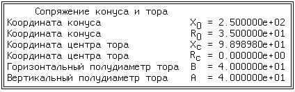
На экране дисплея последовательно высвечиваются два варианта ответа, аналогичных рис. 22-25. Для нашей задачи подходит первый вариант. Результаты расчета имеют вид
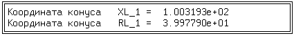
Эти результаты выделены курсивом в файле bottle.cn (рис. 26).
Радиус и координату центра сферы 4 c помощью КАЛЬКУЛЯТОРА вычислим по формулам (см. рис. 27): r=(a2+b2)/(2b); XC=X6+r-b.
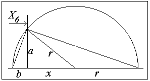
Рис. 27
Координаты шпангоута просто снимем с рисунка-изображения конструкции с помощью режима “окно в окне”. Расчетная схема спроектированной подобным образом конструкции изображена на рис. 28.
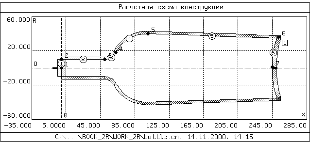
Рис. 28
Позиция
“2. Параметры отрисовки” сервисного меню предназначена
для настройки опций ОТРИСОВЩИКА и функционально дублирует кнопку
 .
.
Позиция “3. Диагностика” сервисного меню предназначена для реализации некоторых функций диагностики исходных данных. Выбор этой позиции приводит к появлению подменю, изображенному на рис. 29.
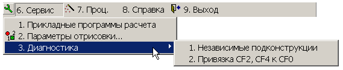
Рис. 29
Позиция “1. Независимые подконструкции” этого подменю предназначена для поиска ошибок в исходных данных, приводящих к появлению независимых подконструкций.
Позиция “2. Привязка CF2, CF4 к CF0” этого подменю предназначена для визуальной диагностики корректности привязки узлов оболочечных элементов и упругих связей к узловым элементам. Этот же режим автоматически включается, если ОТРИСОВЩИК настроен на отрисовку номеров глобальных узлов (CF0) конструкции. На рис. 30 приводится пример такой диагностики. Жирной красной линией показана связь оболочки 158 с глобальным узлом 107 конструкции. Пунктирными линиями обозначено соединение глобальных узлов 107 и 159, а также глобальных узлов 107 и 160 посредством эксцентрично расположенных упругих связей (упругие связи обозначаются в виде соединенных прямой линией двух окружностей, причем начало упругой связи обозначается окружностью большего диаметра, а конец связи – окружностью меньшего диаметра).
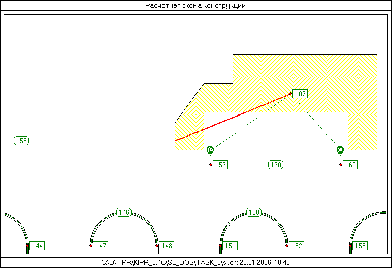
Рис. 30
Выбор позиции 7 ( 7. Проц.) Меню ПРЕПРОЦЕССОРА приводит к следующей последовательности действий:
- перевод исходных данных из внутреннего представления (файлы CN, MT, LD, MD) во внешнее представление с формированием соответствующих файлов (файлы CNX, LDX, MDX);
- выход из ПРЕПРОЦЕССОРА;
- старт ПРОЦЕССОРА.
Позиция 8 (8. Справка) Меню ПРЕПРОЦЕССОРА предназначена для вызова инструкции пользователя и информации о версии программы.
Выбор позиции 9 (9. Выход) Меню ПРЕПРОЦЕССОРА приводит к выходу из ПРЕПРОЦЕССОРА в программную оболочку системы.
Универсальные органы управления
ПРЕПРОЦЕССОРА
Группа “Универсальные органы управления ПРЕПРОЦЕССОРА” (рис.1, поз. 2; рис. 31) предназначена для управления общими режимами работы ОТРИСОВЩИКА.
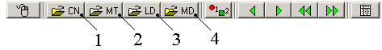
Рис. 31
На рис. 31 в поз 1-4 показаны органы управления, отличающиеся от стандартных Универсальных органов управления ОТРИСОВЩИКА. Эти органы управления предназначены для загрузки файлов CN, MT, LD, MD соответственно в РЕДАКТОР (эту загрузку можно осуществить и с помощью позиции 2 (2. ИД) Меню ПРЕПРОЦЕССОРА).